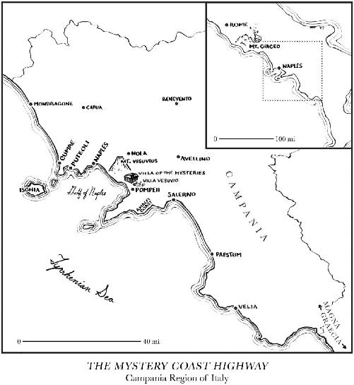

It was bound to turn up somewhere, I guess. But part of me found it hard to believe. If the hunt for the psychedelic kukeon had taught me anything, it was how to expand my narrow definition of the Greek Mysteries. Whenever I envisioned the Mysteries of Eleusis, I had always thought about the archaeological site in Eleusis. And nothing else. Until I realized that things didn’t really work that way in the “ancient cultural internet” of the Mediterranean. Even if we couldn’t test the vessels in Kalliope Papangeli’s museum and warehouse in Greece, it didn’t mean the search for a decent specimen was over.
All along I’ve known there was only one way to prove that the original Eucharist was, in fact, psychedelic. But locating any hard scientific data for ancient hallucinogenic wine in the Mysteries of Dionysus or Jesus was a total bust. If any such potion did attend the birth of Christianity, it certainly wasn’t where I thought it would be. None of the archaeological chemists in Greece, Anatolia, or Galilee had ever been able to deliver the goods. Interesting leads, no doubt, from Andrew Koh at the Massachusetts Institute of Technology, when he announced the psychoactive blend from Tel Kabri in 2014 and shared the unpublished news about Tel Kedesh in 2019. But both preceded the rise of Christianity.
The main coordinates of my hunt were any sites where Dionysus and Jesus overlapped in the first few centuries AD. I was especially focused on places like Corinth, where an original house church might yield a Christian vessel that once held the lethal Eucharist. Or John’s first audience in Ephesus, where both pagan and Christian flasks were discovered at the famed necropolis known as the Grotto of the Seven Sleepers.1 Or Scythopolis in modern-day Israel, where Dionysian figurines have been unearthed along with Christian artifacts in the Northern Cemetery.2 But nothing came to light.
No one is out there looking for psychedelic Christian wine, I had to remind myself. This is not a field of study. As a matter of fact, Koh is the only scholar I’ve ever spoken with about the topic who has the dual training in Classics and chemistry to even consider the merits of the quest. So after years of scouring the academic journals for the smoking gun, I actually gave up for a while, and just stuck to the Greek sacraments from the BC years: the kukeon and the Dionysian wine. The AD years went on the back burner. Until the data from Mas Castellar de Pontós in Spain reminded me to follow the Greek gods and goddesses on their journeys west. In fits and starts I trailed them to the one obvious neighborhood I had been ignoring for way too long.
Magna Graecia.
Of all the places in the ancient Mediterranean to be hiding out for centuries, just waiting for the archaeologists to come along and nose through the untouched vessels, I shouldn’t have been surprised that southern Italy took the prize. It was there that I finally managed to pinpoint the most reliable data for psychedelic wine I have ever seen. Where the remains of the fabulously complex beverage were indisputably dated to the perfect moment in history, the first century AD. And where the magical potion was burrowed away in the perfect place. The region where the Greek deities made landfall in Italy’s archaic past. But also the one spot that called to the one people who defined the very concept of Greek mysticism, birthing Western civilization as we know it.
The Phocaeans.
The same Phocaeans who carried the cult of Demeter and Persephone all the way from Anatolia to found the Greek colony of Emporion in Spain. The same colony that imported the Dionysian vase with the scene of a drunken wine party and left it for Enriqueta Pons to dig up in one of the many grain silos at Mas Castellar de Pontós. The same colony that seems to have introduced the classical Iberians to the graveyard beer full of ergot that opened the gates of the underworld. And the same colony that reconnected with their Indo-European cousins in a skull cult with Stone Age roots. History is seldom wrapped up in such a neat little package. But every once in a while, the God of Ecstasy comes bearing gifts.
As discussed during our visit to Girona, the Phocaeans who were the “Vikings of Antiquity” set sail from Ionia on the western coast of modern-day Turkey to found three sustainable colonies: Massalia (ca. 600 BC), Emporion (ca. 575 BC), and Velia (ca. 530 BC). Located in Magna Graecia about four hours south of Rome, Velia and its Greek mystics were always in the back of my mind. But for some reason, their potential hand in Christianity just never occurred to me. In retrospect, however, there were no better candidates to flood Rome with the immortality magic than the masters themselves.
As mentioned earlier, the classicist Peter Kingsley is the world’s foremost expert on the esoteric tradition that seduced Italy in the wake of Plato’s guru, Parmenides, who was born in Velia in 515 BC. It was Parmenides’s relatives who introduced Magna Graecia to their cult practices from the Phocaean homeland in the east. The Greek-speaking community in Phocaea was the beneficiary of spiritual influences from the world’s oldest and highest cultures—from the proposed Indo-European homelands of both Anatolia and Central Asia, to the Egyptians, Babylonians, Persians, and Indians. The melting pot that created the first scientists of Western civilization between 600 and 400 BC, laying the foundation for all the technology of the modern world, also created a secret tradition of magicians, healers, and prophets who perfected the ancient art of dying before dying.
True philosophy has nothing to do with books. The starting point for the rationality and logic too heavily associated with Western thought was anything but the witty repartee and educated arguments that fill Plato’s dialogues. Behind all the mental gymnastics was a timeless teaching, mentioned only briefly by Socrates in Plato’s Phaedo: “those who engage with philosophy in the right way are practicing nothing else but dying and being dead.”3
And Velia was the source of it all. The epicenter of an exercise that focused on the underworld, where the whole point was to enter a “state of apparent death, of suspended animation when the pulse is so quiet you can hardly feel it.”4 In language that eerily resembles the testimony of the volunteers from the Hopkins and NYU psilocybin experiments, not to mention the marzeah ritual of the Near East, Kingsley describes the supreme goal of Parmenides and his disciples as a “cataleptic” state of trance in a “world beyond the senses,” where “space and time mean nothing” and “past and future are as present as the present is for us.”5 Kingsley’s summary of the neglected tradition that most classicists simply ignore is the playground of every Jewish, Christian, or Muslim mystic who ever dared to explore the inner core of their faith. “To go down to the underworld when you’re dead is one thing,” says Kingsley. “To go there while you’re alive, prepared and knowingly, and then learn from the experience—that’s another thing entirely.”6
For the Phocaeans, dying before dying was the only way to get in touch with the true, underlying structure of the cosmos. As Kingsley explains,
Waking is a form of consciousness, dreaming is another. And yet this is what we can live for a thousand years but never discover, what we can theorize or speculate about and never even come close to—consciousness itself. It’s what holds everything together and doesn’t change. Once you experience this consciousness you know what it is to be neither asleep nor awake, neither alive nor dead, and to be at home not only in this world of the senses but in another reality as well.7
In order to achieve this special state of consciousness, according to Kingsley, there was no need for drugs. All you had to do was enter a cave and lie down “in utter stillness without any food for several days—just like animals in a lair.”8 That’s how the Ancient Greek historian Strabo (63 BC–AD 29) defined the technique known as “incubation” that took pace in the Charonium, a famous cave in the region of Caria (south of Phocaea and Ephesus) dedicated to Pluto and Persephone. Like the rock shelter amid the ruins of Eleusis, it was considered the entrance to the underworld. All over Anatolia temples to Apollo were often built over such caves, affording access to the world of the dead for the brave initiates. But Asclepius would become the most famous god of Greek incubation, which is perhaps why his statue stands in the Archaeological Museum of Empúries, not far from the Greek farm at Mas Castellar de Pontós.9
Kingsley believes Magna Graecia was another obvious home for the ancient practice of incubation. Even before Parmenides came to Campania, the Italian region that stretches from Naples and Pompeii in the north to Velia in the south, Pythagoras was also obsessed with Persephone. It would explain why he constructed his home in southern Italy as a literal temple, complete with “a special underground room where he’d go and stay motionless for long periods of time.”10 Was it a Phocaean love affair with the same goddess that spawned those twenty-five hundred subterranean silos across the archaeological site at Mas Castellar de Pontós? And did it also send the earliest Christians into the subterranean vineyard of Dionysus underneath St. Peter’s Basilica, where the first Eucharist was celebrated in the City of the Dead? Or to the many catacombs around Rome, where Greek-speaking witches ruled the night?

If so, were the paleo-Christians merely dropping to the ground like hibernating bears, or did a magical potion occasionally lubricate the fits of incubation? To the Velians, lying down for a few days in a blackened cave may have been as natural as breathing. But maybe the Romans to their north needed a little push off the cliff. And maybe the same Phocaeans who brought the psychedelic beer to Pontós descended on Rome with just the right wine to make it happen. If there’s a kernel of truth to this ancient puzzle about the secret architects of Western civilization, it has to lie on that glorious shoreline along the Tyrrhenian Sea in western Italy that is the 350 kilometers separating Velia from Rome.
It is hereby christened the Mystery Coast Highway.
Recruited from their homes in Velia, the priestesses of Persephone would indeed take the route north for hundreds of years in the wake of Parmenides. Five hundred years before Jesus, these women made generation after generation of pilgrimage to fulfill their sacred duty at the temple of Demeter and Persephone that had been built in Rome to Greek standards. Like the priestesses, the Greek gods and goddesses themselves came from Campania as well. In The Cults of Campania, first published in 1919, classicist Roy Merle Peterson traces the Roman reverence for Apollo and the divinely inspired Sibylline Oracles to the Greek community in Magna Graecia by way of Cumae, west of Naples.11 Thereafter Peterson dates the introduction of the cults of Demeter, Persephone, and Dionysus into Rome by 493 BC, when grain from Campania was needed to stop a famine in Rome.12 Once Cumae declined in influence, the sisterhoods in Naples and Velia assumed religious control of the Eternal City. By 340 BC the six gods stamped onto early Roman bronze coins “were either Greek gods whose cult had been introduced from the South or were Greek divinities who were now identified with Roman ones.”13
Into this mystical Hellenic landscape that connected Rome to Campania came Paculla Annia, that scandalous high priestess of Bacchus whom Livy tagged as the prime reason for the prohibition of the Dionysian Mysteries in 186 BC. She refused to admit any men over the age of twenty into the all-female revels that robbed the military of eager young soldiers, provoking the Roman senate. Though Peterson is quick to note, of course, that the cult “marked by mystic devotion to the wine god did not altogether cease.”14 Indeed, by the dawn of the Christian era, Peterson chronicles a Campania where “the pagan world was at the height of its power,” with “countless wayside and domestic shrines,” a region “so crowded with gods that they were easier to find than men.”15
By the second and third centuries AD, the new mystery cult devoted to the wine god from Galilee was beginning to replace the old one in Magna Graecia. It was centered in the Campanian cities of Naples and Puteoli to its west, close to the archaeological site of Cumae, where “converts of high rank especially women were not unknown from early times.”16 As Father Francis reminded me, the oldest layers of the Church in Rome are undoubtedly Greek. It was the one thing that the Greek-speaking bureaucrats like the Popes and Church Fathers had in common with the Greek-speaking mystics like the Gnostics. They may have differed wildly on their interpretation of the Gospel of John, the value of the Gnostic texts and the ultimate direction of the Church, but they all knew Greek. By AD 251 when Pope Cornelius convened a synod of sixty bishops to confirm his position as the rightful heir to Saint Peter’s throne, most of the bishops came from the South. In the fourth century AD, Constantine himself erected only two basilicas outside Rome—one in Naples, and another to its north in Capua, the same city that was once home to the British Museum skyphos featuring Triptolemus along with Demeter, Persephone, and Dionysus.
Of all the places on earth for Peter and Paul to set up shop, and for the later Popes to rule Christendom until Martin Luther came along in the sixteenth century, they chose Rome. From its capital along the Mystery Coast Highway, this is where Christianity went into the house churches and catacombs for three hundred years before erecting the buildings that now welcome 2.42 billion Christians from every corner of the globe.
The spiritual history of Western civilization begins in Anatolia with the Proto-Indo-Europeans and, many thousands of years later, the Phocaeans. And it ends in Magna Graecia, where the Velian priestesses would travel back and forth between Rome and Campania. Where, in the decades following the death of Jesus, secret knowledge could be shared with the women in charge of the newest mystery cult. And where a polished psychedelic Eucharist might be sourced, true to the recipes that the Father of Drugs, Dioscorides (ca. AD 40–90), and Rome’s leading pharmacologist, Galen (ca. AD 130–210), had preserved for the many Greek-speaking witches who went underground to lead Christianity’s cave rituals. Like Aurelia Prima in the Hypogeum of the Aurelii, or all the wine sisters from the Catacombs of Priscilla and the Catacombs of Marcellinus and Peter.
On their trip from Velia to Rome, some ideal pit stops appear on the map for the Campanian priestesses. One would be Paestum, less than fifty kilometers north of Velia, with its three magnificent Greek temples. The oldest, dedicated to Hera, dates to 550 BC and is so well preserved that early archaeologists thought it was Roman. Another place for the witches to rest their weary bones would have been Pompeii. The Greek mystics liked volcanoes. According to Peter Kingsley, they “saw volcanic fire as the light in the depths of darkness”; it was “purifying, transforming, immortalizing.” While the eruption of Mt. Vesuvius in AD 79 was nothing but disastrous for the ancient residents, it has given modern excavators unparalleled insight into the past. The seventeen feet of volcanic ash kept the Villa of the Mysteries in pristine condition, allowing the German scholar Nikolaus Himmelmann to notice the similarities between the Dionysian frescoes in Pompeii and the third chamber of the Hypogeum of the Aurelii, where Aurelia Prima is being initiated into the Greek Mysteries.
For almost two thousand years the same ash from the same explosion in the most densely populated volcanic region on the planet held tight to another secret: hard botanical evidence for one of Ruck’s unusually intoxicating, seriously mind-altering, occasionally hallucinogenic, and potentially lethal wines.
In the fall of 2018, as Enriqueta Pons and I began corresponding on a daily basis about the ergot discovery at Mas Castellar de Pontós, I finally started connecting the dots. If the Phocaeans really were the secret architects of Western civilization, and drugs really were involved, then Emporion wouldn’t be the only place they left a trail of clues. If the Vikings of Antiquity could seed the underworld cults of Demeter and Persephone as far west as Iberia, why not closer to home in Magna Graecia? Or if not them, why not any of the other Greek masters who would call Italy home for centuries after Velia’s founding. As only one example, consider Parmenides’ star disciple, Empedocles (495–435 BC), who lived in the Greek city of Akragas in Sicily. He left an enigmatic fragment about the magical use of pharmaka as a “remedy for death.” For a skilled shaman like Empedocles, familiarity with these unspecified drugs signals “a person capable of descending to and returning from the underworld at will.”17 If you were looking for a mystical experience with Demeter, Persephone, or Dionysus in the days before, during, and after the birth of Jesus, you’d be hard-pressed to find a better spot than Magna Graecia.
From Washington, D.C., I started digging through the phenomenally boring online archaeobotany journals I had once subscribed to and wasted a bunch of money by not reading. Until a few days later, when that one elusive study dropped out of the dataverse. From the dawn of Christianity on sacred Greek territory, the psychedelic elixir was exactly where it was supposed to be. And this time I didn’t even have to leave my basement for the Library of Congress. It was all there on the internet. And strangely, it was all written in English. How did I miss this for so long?
In 1996 a 30-by-30-square-meter farmhouse named the Villa Vesuvio was excavated in Scafati on the outskirts of Pompeii by the distinguished Italian archaeologist Marisa de’ Spagnolis. Because of the thick layer of pumice and lapilli (volcanic fragments) covering the site by the Sarno River, it was “perfectly sealed” and confidently dated to AD 79. Like other modest homes in the area, the structure featured a threshing floor, a wine press (torcularium), and a cellar (cella vinaria).17 Seven large vessels called dolia were unearthed. A “thick organic deposit” was found at the bottom of each. But the “yellow, foamy matrix” from one vessel in particular contained a fascinating array of plant and animal remains.
In “Drug Preparation in Evidence? An unusual plant and bone assemblage from the Pompeian countryside, Italy,” published in 2000 in the peer-reviewed journal Vegetation History and Archaeobotany, the archaeobotanist Marina Ciaraldi unveils the results of the analysis that found over fifty species of plants, herbs, and trees in the sample. The macroremains were in such good shape that the chemists didn’t even need to get involved. The botany team was easily able to identify all the species by their seeds or fruits, including willow (Salix sp.), beech (Fagus sylvatica), peach (Prunus persica), and walnut (Juglans regia). Surprisingly, 58 percent of the botanical specimens belonged to taxa with medicinal properties. They included comfrey (Symphytum officinale) and vervain (Verbena officinalis), both long associated with magic and witchcraft.
But the real kicker was the distinctive medley of opium (Papaver somniferum), cannabis (Cannabis sativa), and two members of the nightshade family, white henbane (Hyoscyamus albus) and black nightshade (Solanum nigrum). The inclusion of the nightshades might as well have been lifted straight from the pages of Dioscorides, who specifically lauded the psychedelic properties of black nightshade with its “not unpleasant visions.” The opium and cannabis, both profoundly mind-altering in high doses, are just icing on the cake. Pushing the bizarre medley even further into witch territory, however, were the skeletal remains of lizards (Podarcis sp.), frogs (Rana sp.), and toads (Bufo sp.). Tendrils and berries of the domesticated grape (Vitis vinifera L.) were found alongside a profusion of grape seeds, suggesting the combination of plants, reptiles, and amphibians was steeped in wine.
Unlike the well-documented finds in and around Mas Castellar de Pontós that place the Greek Mysteries at the Greek farm in Spain (finds that include the terra-cotta heads of Demeter/Persephone, the Triptolemus ceramic, and the Dionysian vase), the discoveries at the Villa Vesuvio are more cryptic. There simply isn’t enough context to rule out more pedestrian explanations for the psychotropic blend. Ciaraldi herself believes the potion could represent either of the ancient medicinal concoctions known as the mithridatium or the theriac, compounded cure-all drugs for which countless recipes were recorded in the literature of the time.
The mithridatium frequently consisted of opium and lizards.18 The theriac was usually mixed with the highly prized Falernian wine from Campania.19 Though reptiles were an integral component of each, snakes and lizards were never combined in the theriac—which “might explain why in our assemblage we only find lizards,” writes Ciaraldi.20 In fact, no less than sixty bone fragments belonging to lizards were present in the vessel, indicating a most unusual wine. Because of a small cooker located in the Villa Vesuvio, in addition, the archaeologist sees strong evidence for “drug preparation”:
The location of medicinal activities in the countryside was well known in the Greek world and was exported with success to the Roman world.… The presence of a “pharmacy” in the Pompeian countryside suggests that very specialised activities not directly connected to agricultural production may have not been limited to the city alone. Practices that involved a deep knowledge of the medicinal properties of the plants might still have been in the hands of those who lived more closely to the natural environment.21
Is it too romantic to imagine the Villa Vesuvio as a laboratory for the production of a Dionysian sacrament that could have been used in the Villa of the Mysteries that was within walking distance, just west across Pompeii? Or better yet, was the humble farmhouse a supplier for the Velian priestesses and other Greek mystics who routinely made their way from Magna Graecia to the house churches and catacombs of Rome, off to initiate the devotees of the latest God of Ecstasy into an old Magna Graecian tradition with a homemade Eucharist? A sacrament guaranteed to send their paleo-Christian sisters into the same world of the dead that Empedocles apparently explored with his own pharmaka?
Same as I did for the ergotized beer over at Mas Castellar de Pontós, I made sure to call in my expert witnesses. During the ongoing pandemic in May 2020, I reached out to Patrick McGovern in quarantine in Philadelphia, as well as the leading archaeobotanists in Europe: Hans-Peter Stika at the University of Hohenheim in Germany, Soultana Valamoti at the Aristotle University of Thessaloniki in Greece, and Assunta Florenzano at the Università degli Studi di Modena e Reggio Emilia in Italy. Only to receive another eerie response from the professionals. None of them ever heard of the Villa Vesuvio or this extraordinary wine.
The German Stika cautioned that the seeds, in and of themselves, don’t “mandatorily” make for a ritual psychedelic wine. And that the question mark in the title of Marina Ciaraldi’s paper is a fair reflection of the unknowns. I pressed him on the lizards and seventeen seeds that hardly make this mix an accident: two opium seeds, nine cannabis seeds, four henbane seeds, and two black nightshade seeds. The Greek Valamoti took note and weighed in: “As an archaeologist, I am always cautious. But I would not be too cautious to say that the plants were not used for their medicinal/hallucinogenic properties.” The American McGovern found some middle ground, saying the discovery was certainly “intriguing,” like something out of the witches’ brew in Macbeth. But he rightly suggested its credibility “hinges very much on the archaeobotanical expertise of Marina Ciaraldi,” who has since disappeared from the scene. Despite my best efforts, I could never track her down.
So I reached out to the woman in charge of the dig from 1996, Marisa de’ Spagnolis. Like Enriqueta Pons in Spain, de’ Spagnolis is the one who actually stuck her boots in the ground. And remains the authority on the full archaeological context. Active in the field since 1973, with a full ten years in Pompeii, de’ Spagnolis absolutely stands by Ciaraldi’s analysis. And she had this to say over email from quarantine in Rome: “For me, the Villa Vesuvio was a small farm that was specifically designed for the production of drugs.” The archaeologist then kindly shared a few details that have never before been published. Unlike other farms in the area, the Villa Vesuvio was only equipped for a “very limited production of wine.” Like the home brew at Mas Castellar de Pontós, this seems to be a boutique house wine not intended for mass consumption. Piles of organic material in the yard indicate a garden for select plants and herbs. As excavations continued, de’ Spagnolis would discover a V-shaped “maceration tank for cannabis” that further supports her position. And as a final touch, she also managed to decipher a lone piece of graffiti hidden under the plaster that only lends more romance to the site. In Latin, it reads Scito: ama et aude millia. “Know this: love and dare (to love) a thousand times.” Maybe we’re dealing with a love potion?
In the midst of the entertaining debate, one thing is for sure. Just as Ruck seems to have correctly predicted the ergot-infused beer at Eleusis, there is now hard data suggesting that psychedelic wine did, in fact, exist in the earliest days of Christianity, right where the Mysteries of Dionysus and Jesus came into contact. And right where the paleo-Christians would have needed it most, in the burgeoning centers of the faith—Naples, Puteoli, and Capua. In her paper, Ciaraldi can’t dismiss the possibility that the strange brew in the Villa Vesuvio, if not an example of the mithridatium or theriac, could very well be one of the “aromatic or herbal wines” documented by Dioscorides, or a “spiced wine surprise” detailed by the first-century Roman gourmand Apicius.22 Though that doesn’t explain all the lizards, she openly admits, which add an altogether more magical quality to the potion.
Lizards, I would soon discover, that would continue to slither around the storied archives of the Vatican. But let’s not get ahead of ourselves.
What was once informed speculation, relying purely on Greco-Roman authors like Dioscorides, Galen, and Apicius for the written support, is now a paleobotanical fact. The ancient Italians manufactured a wine with mind-bending ingredients. The solitary example that survived in the Pompeian countryside by the grace of Mt. Vesuvius is certainly not alone. There are others out there. And as more open-minded archaeologists like Andrew Koh continue digging for the evidence, more examples will come to the surface in the years ahead.
If the original Eucharist of Christianity really was psychedelic, then many of the puzzle pieces are finally coming together. The find from the Villa Vesuvio adds even more detail to the story of paleo-Christianity that we mapped out in the last chapter. The who, what, when, where, and why of the real origins of the world’s biggest religion.
Who? Women. Specifically Greek-speaking women with pharmacological expertise, who may have used the portrayal of Mary Magdalene in both the Gospel of John and the Gnostic texts to justify their leading role in the newest mystery cult. Before Jesus generations of women brewed the graveyard beers and mixed the graveyard wines in the Indo-European ritual that spread east and west of Stone Age Anatolia, the “ritual act of communion” that was “by women for women.” After Jesus there were the many women who dominated the house churches and catacombs that defined the faith, offering a safe haven for the old Greek sacrament that needed shelter from the wilderness. The witches of Persephone, who were the primary missionaries of the Phocaeans’ secret cult, had every incentive to both influence, and in some cases even become, the witches of Christianity. Their sister witches of Dionysus, all across Magna Graecia, were in the same boat.
In Jesus—the wizard who died, laid for three days in a cave, and was reborn—they all may have found a brother from the East. And in the Gospel of John they may have immediately recognized the “True Drink” that guaranteed the same experience to anybody who consumed the wine god to conquer death. After all, John appears to be writing for women in Ephesus, just a short hop from Phocaea to its north. If anybody was going to understand his secret “symbols” and “language,” it was Greek-speaking women whose very job was to preserve, protect, and defend the magic they had inherited from their Ionian ancestors in Phocaea. And if anybody could identify Jesus as the new God of Ecstasy, it was the maenads who had kept the cult of Dionysus alive in southern Italy for generations. And for whom Gnosticism would be a seamless transition to the new mystery religion.
What? Drugged wine. All those plants, herbs, and fungi so heavily documented by the Father of Drugs in his sophisticated wine formulas, demonstrating a profound knowledge of dosing. With such toxic, deadly species at play, Dioscorides’s encyclopedia is proof of a long tradition that could induce the “not unpleasant visions” in carefully measured amounts of potent botanicals. The archaeochemical finds from Tel Kabri and Tel Kedesh were the real-life examples of spiked potions before Christianity. The paleobotanical discovery from the Villa Vesuvio is hard data of a drugged wine in the age of Jesus. And whatever pharmakon the Church Father Hippolytus accused Marcus and the female Valentinian Gnostics of consuming. And just maybe, the same pharmakon that fueled the Ancient Greek trips to the underworld in the Christian refrigeria that preceded and later competed with the above-ground Mass.
When? The first three hundred years after Jesus’s death. Before Christianity became legal under Constantine, it was an illegal mystery religion fighting for survival in a hostile and unfriendly world. Its secret meetings and magical sacraments came under just as much suspicion as the Dionysian Mysteries that were systematically targeted by the Roman senate in 186 BC. The idea of the God of Ecstasy obliterating all loyalty to family and country was not welcome in a Roman Empire in the thick of nation building. Similarly the idea of making visionary wine available to the poor folks and women of the 99 percent was just as offensive to the 1 percent of the religious establishment who had enjoyed their monopoly on religious ecstasy for millennia. At their core Dionysus and Jesus were both absolute revolutionaries. To dismiss the real and present danger of their wine is to misunderstand the world into which the Sons of God were born. And the radical nature of their immortality potions. Because the sacrament is only a threat to the status quo if it’s driving people out of their minds. No one was worried about the “alcohol” that the Greeks or Romans never even found a word to name.
Where? Magna Graecia and Rome. Southern Italy was ground zero for Greek mysticism in the centuries before and after Jesus. It was almost more Greek than Greece itself. Hence the name “Naples,” the “new city” in Greek. In Pythagoras and Parmenides alone, Magna Graecia boasted the greatest prophet and the greatest philosopher the ancient world ever knew. In Empedocles, it found the greatest magician in the history of Western civilization. It was here that the “secret doctrine” of cave techniques flourished at least until the third century AD, when Plotinus died in Campania. It was here that the priestesses of Persephone practiced their death and rebirth for the Queen of the Dead, toggling between Rome and Velia along the Mystery Coast Highway. And it was here that Dionysus, the Lord of Death, found the richest soil for his vineyards, where his maenads spread out from the regional headquarters in Cumae and whirled for a thousand years between the sixth century BC and the fifth century AD.23
Not surprisingly Christianity’s mystical coming-of-age all took place in Campania as well—Naples, Puteoli, and Capua. When they weren’t summoning their own Lord of Death in the subterranean crypts of Rome, the Christian funeral banquets filled the catacombs under Naples, the so-called Valley of the Dead. And they never stopped. To this day, despite the Vatican’s efforts to outlaw the fetishistic skull cult that took hold in the Fontanelle Cemetery, Neapolitans continue to consult the heads of the forty thousand “unnamed dead” displayed in the massive ossuary. If ever there were an ideal headquarters for a death cult, it was Campania.
To ignore the spiritual history of Magna Graecia and Rome is to ignore the environment that actually produced the first generations of Christians and made the faith what it is. Simply put, the story of paleo-Christianity is Greek-speaking mystics in southern Italy demanding personal access to the Eucharist. It wasn’t the priests who attracted them to Jesus. It wasn’t the Church Fathers. And it certainly wasn’t the Bible or the basilicas, because neither existed. It was an experience of meeting God, free from doctrine, dogma, and any institution whatsoever. Surely that’s something people today can appreciate.
Why? The only reason religions ever find an audience, the promise of an afterlife. Immortality. There are those who talk about it or read about it. And there are true philosophers who actually die for it. To repeat Peter Kingsley’s single greatest insight about the Phocaeans who made Velia their new homeland: “To go down to the underworld when you’re dead is one thing. To go there while you’re alive, prepared and knowingly, and then learn from the experience—that’s another thing entirely.” If whatever was happening at Mas Castellar de Pontós was the same thing that gripped Campania as Christianity was colonizing Italy, then the death cult of the Phocaeans and other Ancient Greek mystics could not only be the answer to the best-kept secret in Ancient Greece. It could be the answer to the best-kept secret in Christianity.
Not everyone needs psychedelic drugs to die before they die. Lying down in a cave for a few days will certainly get the job done. But not everyone has the time or temerity for that kind of exercise. That’s what sacraments are for. That’s what they’ve always been for, before the bureaucracy replaced them with empty rituals and placebos. In its early days, did Christianity solve the age-old problem of delivering a life-changing mystical experience to as many people as possible by offering a chemical shortcut to enlightenment?
If so, it leaves our heretical investigation with only one final question.
If Greek-speaking witches and their drugged wine from Magna Graecia were so critical to the success of the world’s biggest religion in its first three hundred years, what happened to their immortality potions? The Church Fathers could have denied women the priesthood. And prohibited the drugged Gnostic Eucharist. But that was hardly going to stop the religion with no name that had survived since the Stone Age.
Unfortunately there’s only one way to silence a revolution.
Sooner or later, the bodies start burning.
And if there’s one thing the Church has always been good at, it’s a witch hunt.